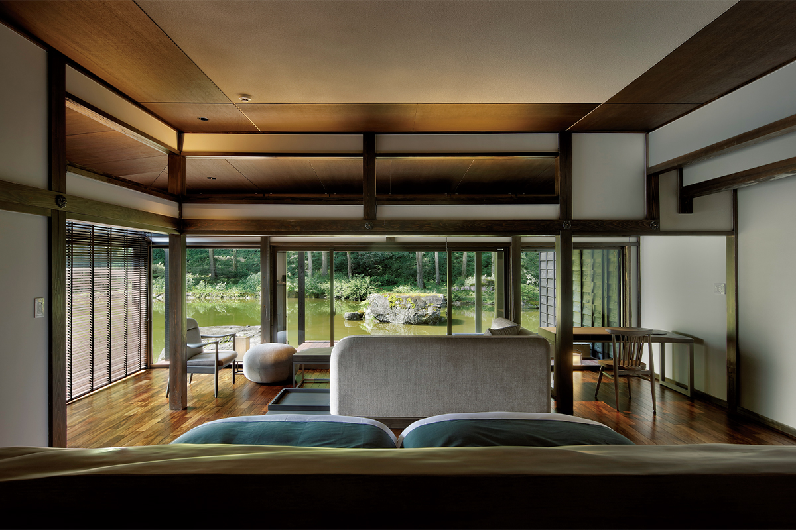
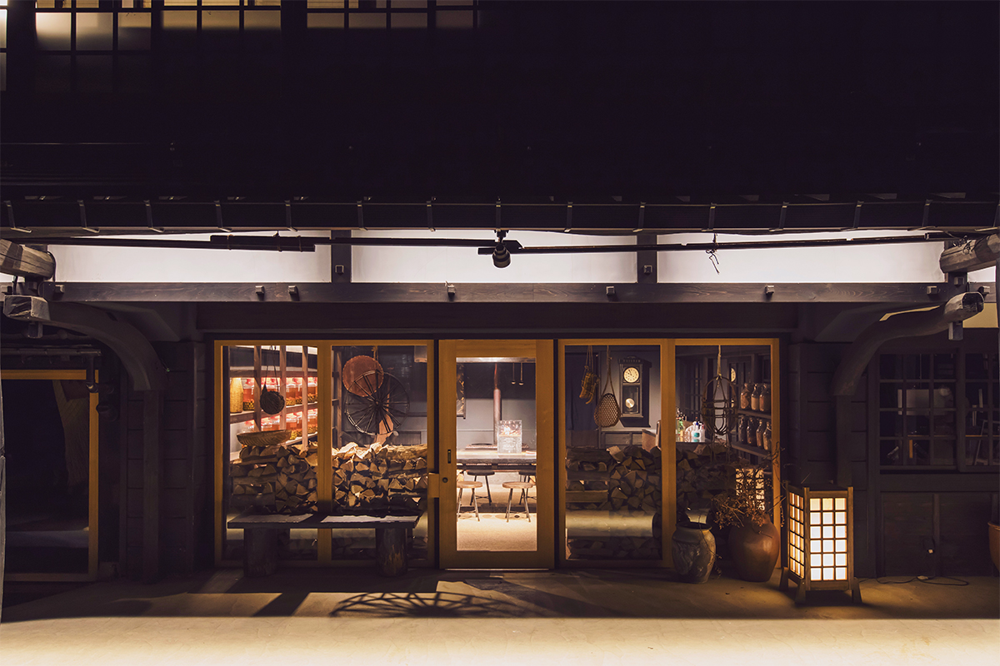
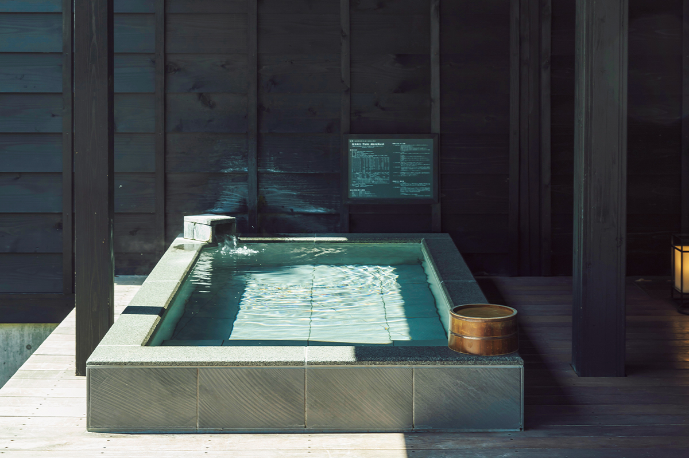
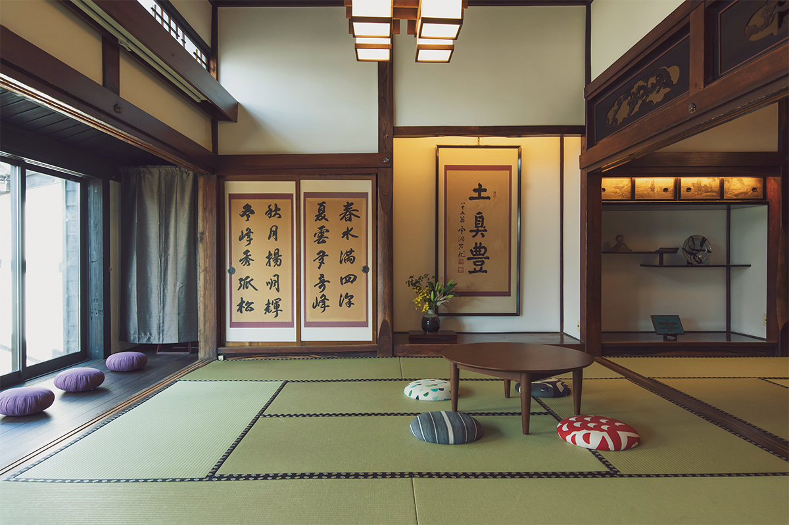
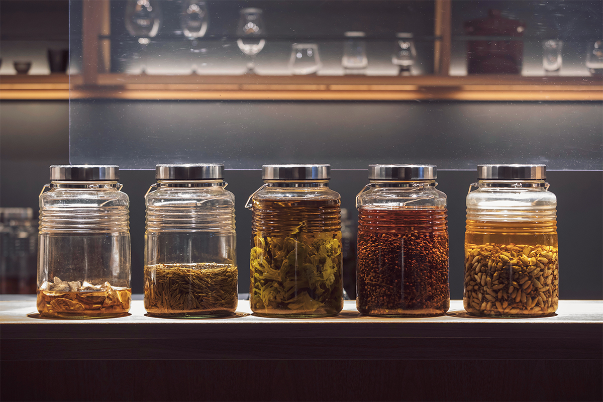
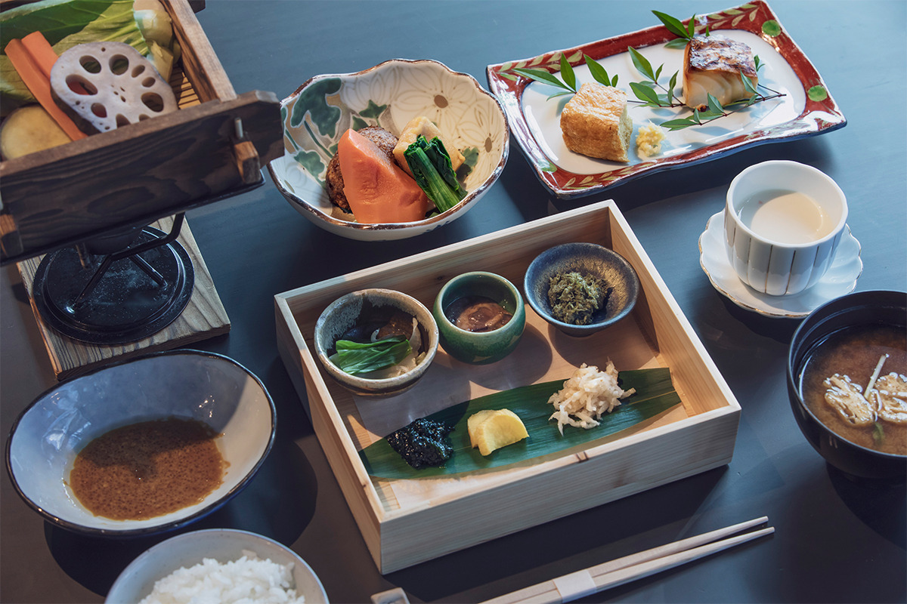
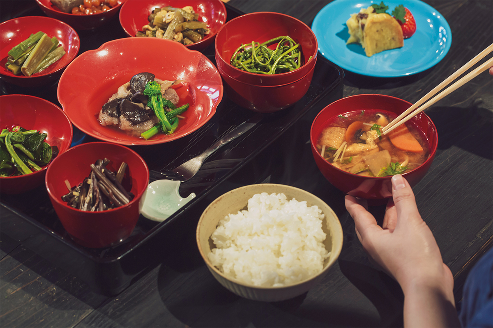
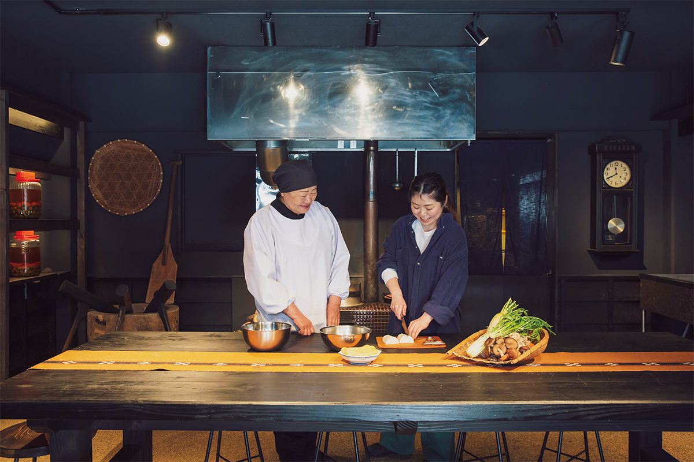
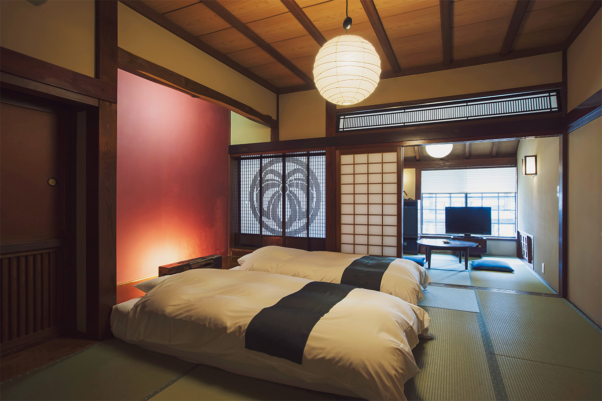
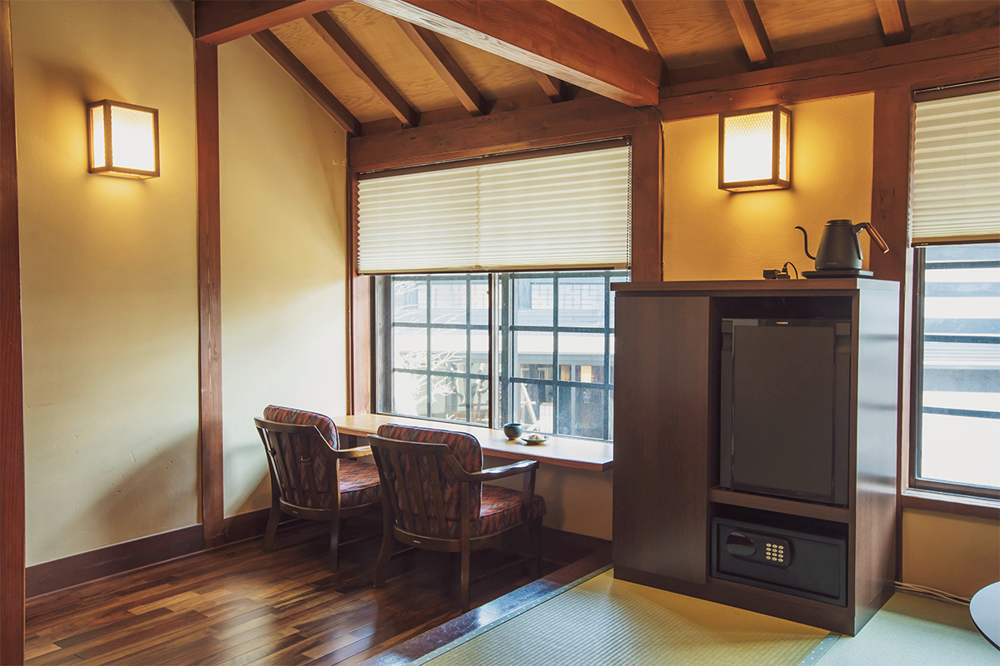

Префектура Ниигата · Минамиуонума · где остановиться
Гостиница ryugon в Минамиуонуме: неспешная жизнь снежного края в старых домах

Минамиуонума относится к самым снежным районам Японии, и за века здесь сложились своя история и свой уклад. Гостиница ryugon предлагает не просто посмотреть на них, а пожить так, как живут в снежном краю: через архитектуру, онсэн, еду и занятия с местными жителями.
Место
Старый рёкан, который стал ryugon
Насколько хватает глаз, тянутся рисовые поля, а за ними поднимаются величественные горы Хаккайсан и Этиго-Комагатакэ. Минамиуонума на юге префектуры Ниигата славится рисом косихикари, и пейзаж здесь именно такой, какой ждёшь от рисового края. Полвека в этих местах работал рёкан с онсэном «Рюгон», а в 2019 году после перестройки он открылся заново под именем ryugon.

Главной темой обновления стали история и уклад самого снежного района Японии. Гостиница стоит у подножия горы Сакадо, где сохранились руины горной крепости, связанной с именем Канэцугу Наоэ (1560–1620). Этот военачальник и советник рода Уэсуги считается одним из самых известных уроженцев этих мест. На участке около 5000 квадратных метров стоят старые дома, перевезённые сюда: усадьбы деревенских старост и богатых крестьян, построенные около 200 лет назад. Старый «Рюгон» любили многие известные люди. Его историческую ценность сохранили, но дома открыли наружу, чтобы из них чувствовалась связь с окружающей природой.

Главный дом внесён в государственный реестр материального культурного наследия, и интересны в нём ещё и общие пространства. Есть уголок у белого очага ирори, где можно взять сладости и напитки. Есть большой диван, придуманный специально для гостиницы по образу камакуры, снежной хижины. В садовой гостиной в хорошую погоду отдыхают с видом на гору Сакадо и сад, а в баре наливают местное сакэ и домашние настойки на фруктах. Каждое из этих мест по-своему рассказывает о жизни снежного края.


Еда
Гастрономия снежного края
В общих пространствах и номерах Villa Suite хорошо ощущается близость горы Сакадо и сада, которые охраняются государством как исторический памятник и место живописной красоты. В номерах Classic стоит присмотреться к толстым балкам, рассчитанным на тяжесть снега, и к рамам и раздвижным дверям ручной работы.

Кухню здесь называют гастрономией снежного края: в её основе продукты и местные блюда, которые в этих местах едят поколениями. Это горные травы и грибы, свежая рыба из Японского моря и «татэ-яки», фирменное блюдо ещё со времён рёкана: еда, которую жарят на углях очага ирори. Но больше всего гостиница гордится рисом. Это косихикари высшего сорта из района Сиодзава, который ценится выше всех в Уонуме. Его варят в печи на чистой воде, и блестящий рис с каждым укусом становится всё слаще и насыщеннее.
Программы
Пожить, как живут здесь

Отдельного внимания заслуживают программы для гостей. Самая популярная из них «Кухня на земляном полу». Её ведёт местная мастерица домашней кухни: на печи в доме варят рис и готовят суп, а её рассказы и блюда из горных трав, приготовленные своими руками, заряжают силами.

Всего программ около двенадцати. Можно проехать на велосипеде по рисовым полям, сходить с гидом в соседние горы за горными травами или грибами, погулять по местной торговой улице Муикамати. Во время фестиваля «Земля искусства» Этиго-Цумари в 2022 году гостиница устраивала частные экскурсии с выездом из ryugon, и по желанию к ним приглашали официального гида фестиваля.
«За двадцать лет фестиваля мы увидели, как искусство возвращает силы деревням. Местные жители тоже ждут его с нетерпением»
управляющий гостиницей
Здесь можно увидеть искусство и при этом прочувствовать саму эту землю.
Номера
Снежный край в дизайне комнат
В номерах Classic, японских комнатах с западной мебелью, чувствуется облик старых домов, перевезённых из разных мест префектуры, в том числе усадеб деревенских старост. Есть номера с купелью под открытым небом и с широкой галереей энгава вдоль окон.


ryugon
- Адрес
- префектура Ниигата, Минамиуонума, Сакадо, 1-6
- Телефон
- +81 25-772-3470
- Номера
- Villa Suite 8, Classic (японские комнаты) 21
- Цены / Вход
- ночь с ужином и завтраком от 29 975 иен (Villa Suite), от 20 900 иен (Classic), с налогом и сервисным сбором
- Заезд / выезд
- 15:00 / 12:00
- Как добраться
- около 4 минут на машине от станции Муикамати (JR и Хокуэцу-кюко); от гостиницы HATAGO Isen у станции Этиго-Юдзава есть трансфер. На машине около 12 минут от съезда Сиодзава-Исиути и около 8 минут от съезда Муикамати скоростной дороги Канэцу
- Сайт
- ryugon.co.jp
Фото: Юко Тиба.